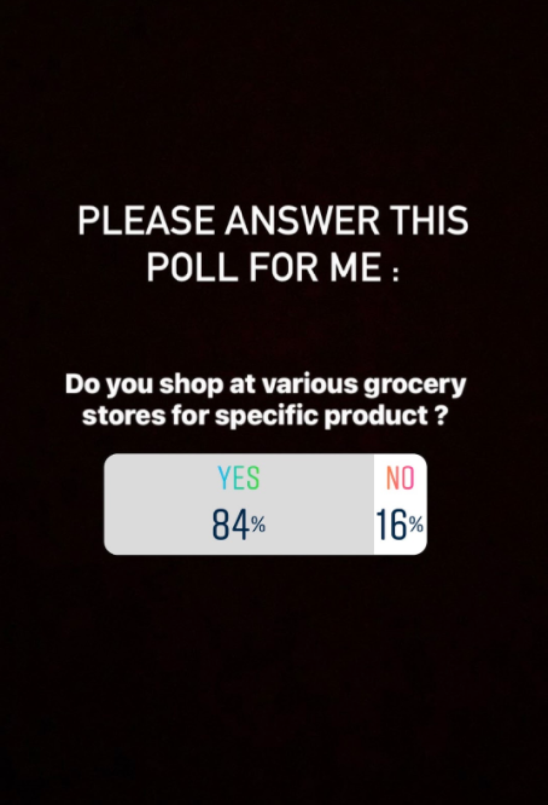
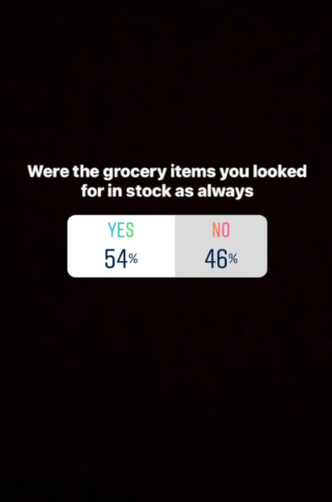
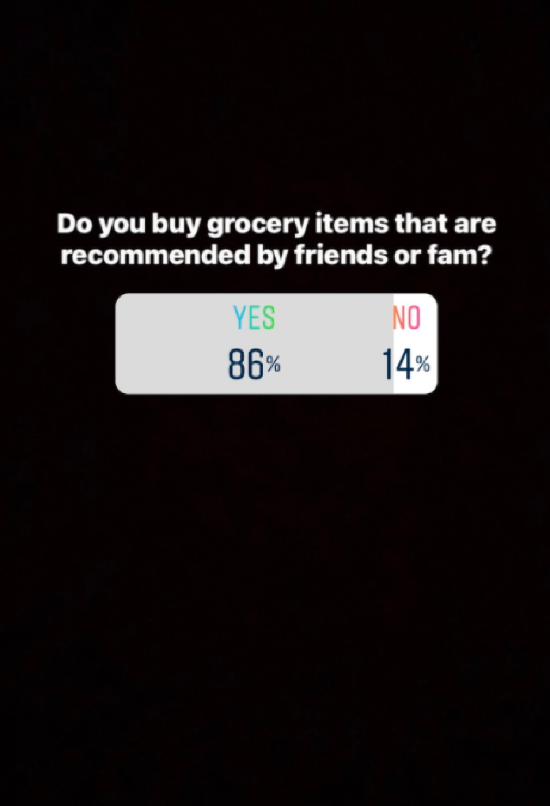
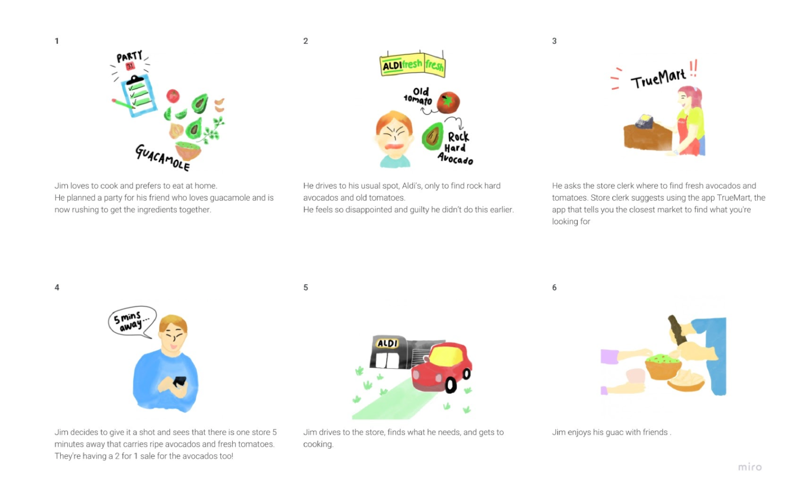

TrueMart
Case Study
Case Study
An application that guides you to the nearest, best quality markets with updates on the quantity available, quality and available deals. plus, reviews of location available.
Solution
Finding what markets near you had what you needed in stock, proof of the quality, and any deals available for consumers.
Problem
researcher and designer - user research, prototyping, ideation, and presentation
My Role
researcher and designer - user research, prototyping, ideation, and presentation
Team
A week dedicated to user research, two weeks of applying data to create a solution for users, focusing on target group, followed by two more weeks of application development, prototyping and testing.
Project Plan
User interviews
Surveys
Proto + User Persona
Affinity Diagram
Empathy Map
Testing
User Flow
User Journey
Storyboarding
Competitor Analysis
Prototype
Surveys
Proto + User Persona
Affinity Diagram
Empathy Map
Testing
User Flow
User Journey
Storyboarding
Competitor Analysis
Prototype
Methods
Tools
Platform
iOS


With a design challenge that required to solve a real, clearly identified need in users’ everyday lives, the most shared problem was grocery shopping. After brainstorming and user interviews bloomed TrueMart, the application that helps you find your nearest, best quality grocery market.
This idea came from shared experiences prior to the Covid-19 pandemic, and was only made more difficult at the height of it. Finding food and products was difficult to find and for those wanting better quality of it would be a luxury.
This idea came from shared experiences prior to the Covid-19 pandemic, and was only made more difficult at the height of it. Finding food and products was difficult to find and for those wanting better quality of it would be a luxury.



User Research
Key Findings
Conducted 5 zoom interviews lasting between 5-10 minutes, where the focus was on what frustrates the user when grocery shopping, what motivates them to go in person versus online shopping and vice versa.
An instagram survey was used to reach out to more people and get better insight on how many people preferred specific stores versus others, how often they’d find what they needed, and if word of mouth was impactful when it came to reviews
Organizing Data Found
After collecting the data, methods like affinity diagrams, empathy mapping and creating a user persona my teammates and I were able to spotlight what the common issues were. From there we could take steps towards creating a solution that worked for customers.


Ideation
Our users want to know if they can get all the produce they need at one stop. We might be able to help our user-demographic, if we build a community-sourced app that lets them know where to go for fresh, ripe produce and how much is in stock, in stores near them.
We assure the consumer that they are getting the best value and best quality produce.
We assure the consumer that they are getting the best value and best quality produce.
Who is the user and what’s the struggle
Jim, time-crunched and budget-conscious, likes to cook most of his meals at home. He likes the grocery store, but he struggles to find quality produce at his local market.
He needs a quick and reliable way to locate fresh, ripe produce.
He needs a quick and reliable way to locate fresh, ripe produce.
Problem statement

User Insight
For the ideation process, the main takeaways was creating a user insight, problem statement and the storyboard. This gave me more of an opportunity to zero in on the problem I wanted to solve.